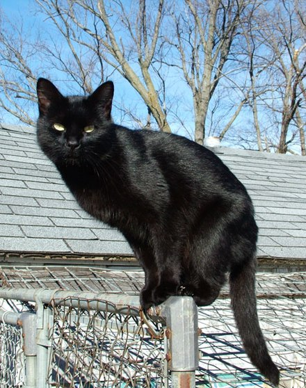

Black Cat

A black cat is a domestic cat with black fur that may be a mixed or specific breed, or a common domestic cat of no particular breed. The Cat Fanciers' Association (CFA) recognizes 22 cat breeds that can come with solid black coats.[1] The Bombay breed is exclusively black. All-black fur pigmentation is slightly more prevalent in male cats than female cats. Most black cats have golden irises due to their high melanin pigment content. In popular myths, witches are believed to be associated with black cats.
Coat
Any cat whose fur is a single color, including black, is known as a "solid" or "self". A "solid black" cat may be coal black, grayish black, or brownish black. Most solid-colored cats result from a recessive gene that suppresses the tabby pattern. Sometimes the tabby pattern is not completely suppressed; faint markings may appear in certain lights, even on a solid black cat. A cat having black fur with white roots is known as a "black smoke".[2]
Black cats can also "rust" in sunlight, the coat turning a lighter brownish-red shade.[2] Eumelanin, the pigment that is required to produce the black fur, is somewhat fragile, so the rusting effect can be more pronounced in cats that frequently spend time in the sun. A rarer situation that can also cause rusting is a deficiency of the amino acid tyrosine, which is required to produce eumelanin.[3]
In addition to the Bombay, the Cat Fanciers' Association allows solid black as a color option in 21 other breeds. The color description for those breeds is:
Fur
Any cat whose fur is a single color, including black, is known as a "solid" or "self". A "solid black" cat may be coal black, grayish black, or brownish black. Most solid-colored cats result from a recessive gene that suppresses the tabby pattern. Sometimes the tabby pattern is not completely suppressed; faint markings may appear in certain lights, even on a solid black cat. A cat having black fur with white roots is known as a "black smoke".[2]